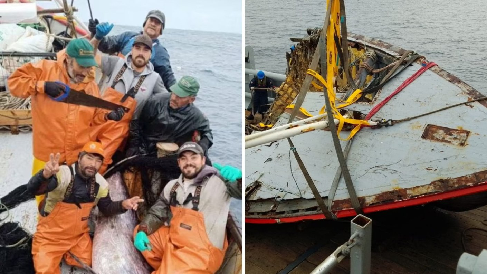

Diario "El Faro"

Un audio enviado por el patrón de la lancha Bruma sería clave en la investigación por el extravío de los siete pescadores en el Bío Bío. Este revela las condiciones del clima y que debieron “fondearse” la noche del accidente.
Este domingo se cumple una semana del accidente y El Faro tuvo acceso a una conversación previa a la desaparición, específicamente entre el patrón de la lancha y su padre.

El registro fue enviado por José Luis Medel, patrón de la lancha Bruma, a su padre, pasadas las 15:30 horas del sábado, antes del accidente. En él daba cuenta de las condiciones en que se encontraban los siete tripulantes por el clima.
A siete días de la desaparición de la embarcación, familiares catalogaron esta jornada como crucial para encontrar el resto de la embarcación o incluso los cuerpos de los desaparecidos.
Claudia Urrutia, dirigente bacaladera y vocera de las familias, señaló que se encontraron trozos de la bodega, lo que genera ilusión por encontrar a los tripulantes.
Juan Medel, padre y abuelo de tripulante de la Bruma, señaló que la armada confirmó la extensión por siete días más de la búsqueda; sin embargo, para mañana se esperan condiciones meteorológicas adversas. Por lo que esperan tener buenas noticias hoy.